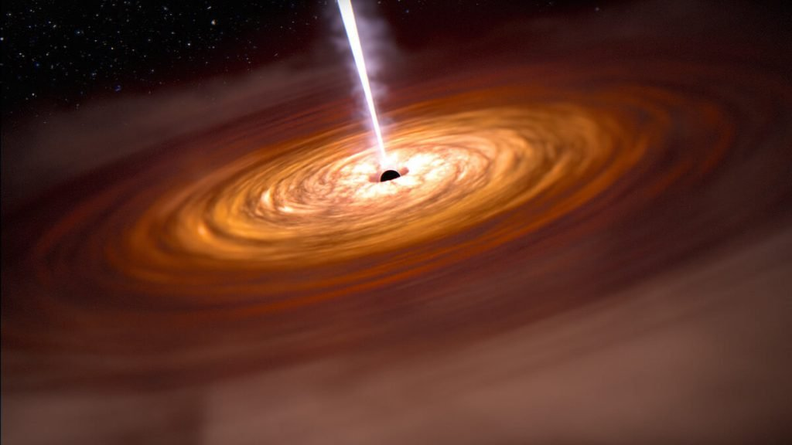
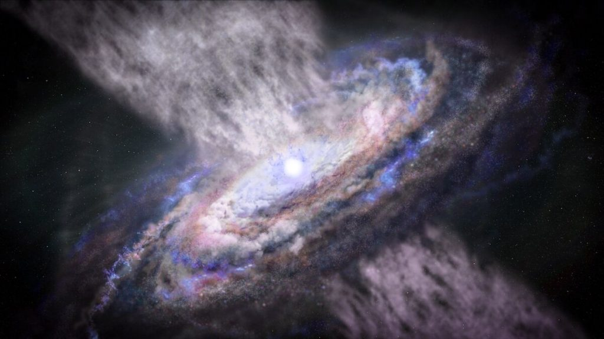
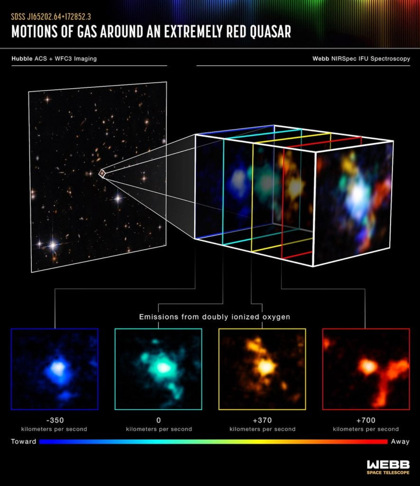

အရေး အကြီးဆုံး အချက်ကတော့ ဒီ ဂလက်ဆီ အစုအဝေးရဲ့ ဗဟိုမှာ အလွန် အားကောင်းတဲ့ ကွေဆာကြီး တစ်ခု ရှိနေတာပဲ ဖြစ်ပါတယ်။
ကွေဆာ ဆိုတာက ဂလက်ဆီ တွေရဲ့ ဗဟိုမှာ ရှိတဲ့ ဧရာမ supermassive black hole တွင်းနက်ကြီးတွေပါ။ ဒါပေမယ့် ရိုးရိုး supermassive black hole တွေနဲ့ ကွာတာက သူတို့ဟာ သူတို့ရဲ့ ပတ်ဝန်းကျင်က ဓါတ်ငွေ့တွေနဲ့ ဖုန်မှုန့်တွေ၊ အခြား အရာ ဝတ္ထုတွေကို အငမ်းမရ ဝါးမြို စားသုံးနေ ကြတာပဲ ဖြစ်ပါတယ်။

ဒီ accretion disk ထဲမှာ ဝဲပတ် စီးဆင်းနေတဲ့ ဓါတ်ငွေ့တွေဟာ အချင်းချင်း ပွတ်တိုက် မိတာကြောင့် ဒီဂရီ စင်တီဂရိတ် သန်းချီအောင် ပူပြင်း လာကြပါတယ်။ ဒီလို ပူပြင်း လာတဲ့ အတွက် ဒီ ဝဲဂယက် ကြီးကနေ အလွန် လင်းထိန် တောက်ပတဲ့ အလင်းရောင်တွေ ထွက်ပေါ်လို့ လာပါတယ်။ တကယ်တော့ အလင်းရောင်တွေတင် မကပါဘူး၊ ရေဒီယို လှိုင်းတွေ၊ မိုက်ကရိုဝေ့ လှိုင်းတွေ၊ infrared အနီအောက် ရောင်ခြည် နဲ့ X-ray ရောင်ခြည်တွေပါ အမြောက်အများ ထွက်ပေါ်လို့ လာ ပါတယ်။
အခုလို ထွက်ပေါ်လာတဲ့ အလင်းဟာ အလွန် လင်းထိန် နေတာမို့ မိခင် ဂလက်ဆီ တစ်ခုလုံးက ထွက်တဲ့ စုစုပေါင်း အလင်းထက်တောင် အများကြီး ပိုပြီး လင်းနေပါသေးတယ်။

နာဆာက ပညာရှင် တွေဟာ ဂျိမ်းစ်ဝက်ဘ် ပေါ်မှာ တပ်ဆင်ထားတဲ့ NIRSpec အနီအောက် ရောင်ခြည် ကင်မရာကို အသုံးပြုပြီး ဒီ ကွေဆာကို လေ့လာ ခဲ့ကြပါတယ်။
ဂျိမ်းစ်ဝက်ဘ် တယ်လီစကုပ် ကြီးက ရှာဖွေ တွေ့ရှိ မှုအရ ဒီ ကွေဆာကြီးဟာ သူ့မိခင် ဂလက်ဆီ ထဲက ဓါတ်ငွေ့တွေကို အငမ်းမရ ဝါးမျိုစားသုံး နေတယ် ဆိုတာကို တွေ့ရှိ လာခဲ့ ရပါတယ်။
ဒါဟာ ကွေဆာ တစ်ခုအတွက် အထူးအဆန်းတော့ မဟုတ်ပါဘူး။ ထူးဆန်း နေတာကတော့ ဒီ ကွေဆာဟာ သူ့မိခင် ဂလက်ဆီရဲ့ ဓါတ်ငွေ့တွေ၊ ဒြပ်ထုတွေကို ဝါးမျိုုစားသုံးလို့ အားမရ နိုင်ပဲ အနီး ပတ်ဝန်းကျင်က အခြား ဂလက်ဆီ ၃ ခု ထဲက ဓါတ်ငွေ့တွေကိုပါ ဖမ်းယူ စားသုံးနေတယ် ဆိုတာပဲ ဖြစ်ပါတယ်။

အခု တွေ့ရှိမှုဟာ ပညာရှင် တွေအတွက်တော့ အရေးပါတဲ့ တွေ့ရှိမှု တစ်ခု ဖြစ်ပါတယ်။ ဘာာလို့လဲဆိုတော့ စကြာဝဠာရဲ့ အစောပိုင်း ဒီကာလမှာ ဒီလို ဂလက်ဆီ အစုအဝေးတွေဟာ အလွန် ရှားပါး ခဲ့လို့ပဲ ဖြစ်ပါတယ်။ ဒီကာလမှာ ဂလက်ဆီ တွေဟာ မွေးဖွားစပဲ ရှိသေးတာမို့ cluster တွေ အနေနဲ့ အချင်းချင်း သိပ်ပြီး စုစည်းမှု မရှိ ကြသေးပါဘူး။ အခုထိ ဒီ အစောပိုင်း ကာလမှာ ဒီလို cluster အစုအဝေး အနည်းအကျဉ်းပဲ ရှာဖွေ တွေ့ရှိ ထားပါသေးတယ်။
အခု ကွေဆာကြီး ဟာ ဂလက်ဆီ ထဲက ဓါတ်ငွေ့တွေကို အငမ်းမရ ဖမ်းယူ စားသုံး နေတာနဲ့ တချိန်ထဲမှာ သူ့ဆီကနေ ပြင်းထန်တဲ့ ရေဒီယေးရှင်း ရောင်ခြည်တွေလဲ အမြောက်အများ ထုတ်လွှတ် ပေးနေပါတယ်။ ဒီ ဓါတ်ရောင်ခြည် တွေဟာ မိခင် ဂလက်ဆီ နဲ့ အနီး ပတ်ဝန်းကျင်က ဓါတ်ငွေ့တွေကို အပြင်ကို လေတိုက် သလို လွင့်ပါး သွားစေပါတယ်။ ဒါ့ကြောင့် မိခင် ဂလက်ဆီထဲက ဓါတ်ငွေ့တွေဟာ ကွေဆာထဲ ကျပြီး ပျောက်ဆုံးသွားရင်သွား၊ ဒီလို ကျမသွားရင်လဲ ရေဒီယေးရှင်း ရောင်ခြည်တွေရဲ့ တိုက်ခတ်မှုကြောင့် ဟင်းလင်းပြင်ထဲ လွက်ထွက် သွားကြရပါတယ်။

အခု တွေ့ရှိမှု အရဆို ဒီလို ကြယ်သစ် ဖြစ်ပေါ်မှုကို အဟန့်အတား ဖြစ်စေတာဟာ မိခင် ဂလက်ဆီ တစ်ခုတည်းတင် မဟုတ်ပဲ အနီး ပတ်ဝန်းကျင်က ဂလက်ဆီ တွေကိုပါ ထိခိုက်မှု ဖြစ်နိုင်ပါတယ်။
ဒီ ကွေဆာနဲ့ ပတ်သက်လို့ ပညာရှင်တွေ ဆက်လက် လေ့လာနေဆဲ ဖြစ်ပါတယ်။ ဒါ့ကြောင့် သိပ်မကြာမီ အချိန်အတွင်းမှာ ဒီ ကွေဆာနဲ့ ပတ်သက်ပြီး ရှာဖွေ တွေ့ရှိချက် အသစ်တွေ ထပ်မံ ထွက်ပေါ်လာလိမ့် အုံးမယ်လို့ မျှော်လင့် ရပါတယ်။
